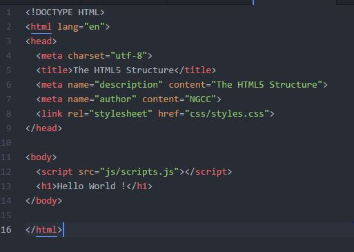
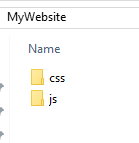
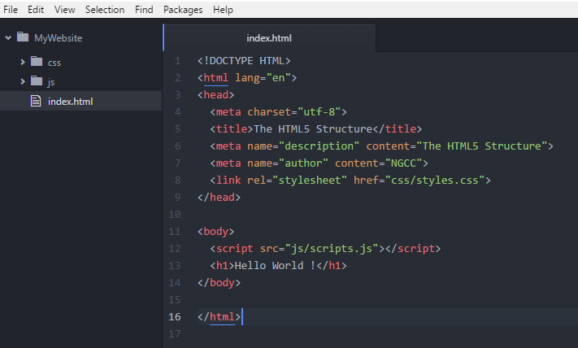

HTML stands for Hyper Text Markup Language. It’s a markup code for building the structure of a web page and HTML5 is the latest version.
'Hypertext' means machine readable text and 'Markup' means to structure it in a specific format. The markup transforms raw text (HTML tags) into structured HTML documents.
A piece of code would look something like this

Responsiveness
When a website design adapts to different devices, like tablets, smart phones, desktop monitors of different sizes to provide an optimal viewing experience, it is called a responsive website. Responsiveness aims at making the website fluid
[ include an image that shows a website on different devices ]

Bootstrap
It is the most popular HTML, CSS, and JavaScript framework for developing responsive web sites. It includes HTML and CSS based design templates which are easy to download and set up. http://getbootstrap.com

Downloading and installing WAMP server
WampServer is a Windows web development environment. It allows you to create web applications with Apache2, PHP and a MySQL database. Alongside, PhpMyAdmin allows you to manage easily your databases.
From http://www.wampserver.com/en/
- Double click on the downloaded file and just follow the instructions. Everything is automatic. The WampServer package is delivered whith the latest releases of Apache, MySQL and PHP.
- The “www” directory will be automatically created (usually c:\wamp\www)
- Create a subdirectory in “www” and put your files inside.
- Click on the “localhost” link in the WampSever menu or open your internet browser (Chrome) and go to the URL : http://localhost to view your output
Downloading and installing MAMP server - for MAC users
MAMP installs a local server environment in a matter of seconds on your computer. It comes free of charge, and is easily installed. .
From https://www.mamp.info/en/downloads/
- Double click on the downloaded file and just follow the instructions.
Getting organised
Before building our first website, we need to get our files organised.
Once wampserver is set up and turned on, create a folder named “MyWebsite” in C://wamp/www
We create two new folders within the “MyWebsite” named “css” and “js”

Creating our first HTML page and viewing it on a browser
After you've installed Atom https://atom.io/ , let's create our first HTML page
Open a directory in Atom Editor by choosing the menu item File > Open Folder and select a directory from the dialog. Choose the directory "MyWebsite" that you just created.
Create a new file File > New file and type in the following code.
Save the file as "index.html"

Use the following URL in a browser to view the output.
localhost/MyWebsite/index.html